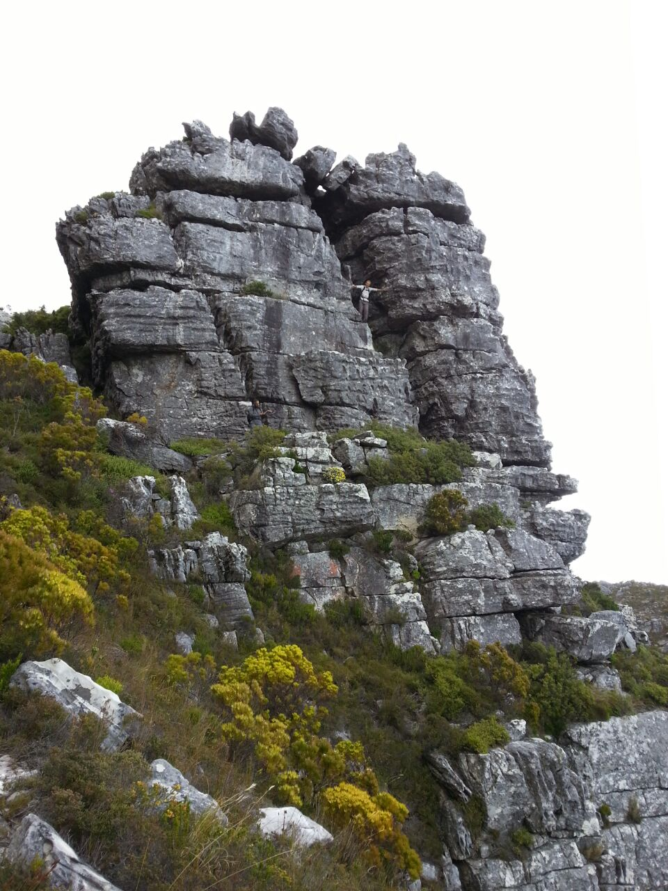

<html>
<head>
   <link rel="stylesheet" href="https://unpkg.com/leaflet@1.0.0-rc.3/dist/leaflet.css" />
   <script src="https://unpkg.com/leaflet@1.0.0-rc.3/dist/leaflet.js"></script>
   <script src='leaflet-omnivore.min.js'></script>
   <script src="leaflet.rotatedMarker.js"></script>
   <script src="https://cdn.polyfill.io/v2/polyfill.min.js?features=Promise"></script>
   <script src="https://unpkg.com/leaflet-filelayer"></script>
   <script src="https://unpkg.com/togeojson"></script>
  <style>
    #map{ height: 100%;width: 100% }
  </style>
</head>
<body>

  <div id="map"></div>

 <script>


  // load a tile layer
var OSM = L.tileLayer('http://tile.openstreetmap.org/{z}/{x}/{y}.png', {
	attribution: 'Map data &copy; <a href="http://openstreetmap.org">OpenStreetMap</a> contributors', 
	minZoom: 0, 
	maxNativeZoom: 19
}),
    
COCT13 = L.tileLayer('http://{s}.coct.aerial.openstreetmap.org.za/layer/za_coct_aerial_2013/{z}/{x}/{y}.jpg', {
	attribution: 'Copyright &copy; 2013 <a href=\"https://www.capetown.gov.za/\">City of Cape Town</a>',
	minZoom: 0,
	maxZoom: 22
}),
COCT15 = L.tileLayer('http://{s}.coct.aerial.openstreetmap.org.za/layer/za_coct_aerial_2015/{z}/{x}/{y}.jpg', {
	attribution: 'Copyright &copy; 2015 <a href=\"https://www.capetown.gov.za/\">City of Cape Town</a>',
	minZoom: 1,
	maxZoom: 22
}),
    
COCT17 = L.tileLayer('https://citymaps.capetown.gov.za/agsext1/rest/services/Aerial_Photography_Cached/AP_2017_Jan_TM/MapServer/tile/{z}/{x}/{y}', {
	attribution: 'Copyright &copy; 2017 <a href=\"https://www.capetown.gov.za/\">City of Cape Town</a>',
	minZoom: 0,
	maxNativeZoom: 12	
}), 
   
CDNGI = L.tileLayer('http://{s}.aerial.openstreetmap.org.za/ngi-aerial/{z}/{x}/{y}.jpg', {
	minZoom: 1,
	maxZoom: 22
}),

MAPBOXSAT = L.tileLayer('https://a.tiles.mapbox.com/v4/mapbox.streets-satellite/{z}/{x}/{y}.png?access_token=pk.eyJ1IjoiYWxsdHJhaWxzIiwiYSI6ImNqM293emo1YjAwZWQyd3FnaXh0eWsxeHkifQ.LeDD0X-JiWsJmDKeB0AS5w', {
	minZoom: 1,
	maxZoom: 19
}),
    
LANDSCP = L.tileLayer('https://{s}.tile.thunderforest.com/landscape/{z}/{x}/{y}.png?apikey=1a9e32339fd64207a92f54488df3067d', {
	minZoom: 0,
	maxNativeZoom: 19
}),
    
MAPY = L.tileLayer('https://{s}.mapserver.mapy.cz/wturist-m/{z}-{x}-{y}', {
	minZoom: 2,
	maxNativeZoom: 18,
    subdomains:['m1','m2','m3']
}),
    
STRAVA = L.tileLayer('https://{s}.tiles.mapbox.com/v4/strava.blprdx6r/{z}/{x}/{y}.png?access_token=pk.eyJ1Ijoic3RyYXZhIiwiYSI6IlpoeXU2U0UifQ.c7yhlZevNRFCqHYm6G6Cyg', {
	minZoom: 0,
	maxNativeZoom: 19
}),
    
NGITOPO50k = L.tileLayer('http://htonl.dev.openstreetmap.org/ngi-tiles/tiles/50k/{z}/{x}/{-y}.png', {
	attribution: 'State Copyright &copy; 1996&ndash;2013 <a href="http://www.ngi.gov.za/">Chief Directorate: National Geo-spatial Information</a>', 
	minZoom: 4,
	maxZoom: 20,
	maxNativeZoom: 15
}),

NGITOPO250k = L.tileLayer('http://htonl.dev.openstreetmap.org/ngi-tiles/tiles/250k/{z}/{x}/{-y}.png', {
	attribution: 'State Copyright &copy; 1996&ndash;2010 <a href="http://www.ngi.gov.za/">Chief Directorate: National Geo-spatial Information</a>', 
	minZoom: 4, 
	maxNativeZoom: 12
}),
    
OSMOver = L.tileLayer('https://api.mapbox.com/styles/v1/akkedisi/cj6wf07ok92fv2rqr1zbvjzb4/tiles/256/{z}/{x}/{y}?access_token=pk.eyJ1IjoiYWtrZWRpc2kiLCJhIjoiY2o2d2VwdjBlMWpucjJxbDFlbzR1YTg5dSJ9.116Aq7uu6qkEfbnMbQr4xA', {
	attribution: '&copy; <a href="https://www.mapbox.com/about/maps/">Mapbox</a>, &copy; <a href="http://www.openstreetmap.org/copyright">OpenStreetMap</a> | <a href="https://www.mapbox.com/map-feedback/" target="_blank"><strong>Improve this map </strong> </a>', 
	minZoom: 1,
	maxZoom: 22,
	maxNativeZoom: 20
}),


googleSat = L.tileLayer('http://{s}.google.com/vt/lyrs=s&x={x}&y={y}&z={z}', {
    maxZoom: 20,
    subdomains:['mt0','mt1','mt2','mt3']
}),

HereSat = L.tileLayer('https://{s}.aerial.maps.api.here.com/maptile/2.1/maptile/newest/satellite.day/{z}/{x}/{y}/256/png8?app_id=xWVIueSv6JL0aJ5xqTxb&token=djPZyynKsbTjIUDOBcHZ2g&lg=ENG', {
    maxZoom: 20,
	subdomains:['1','2','3','4']
}),

ESRISat = L.tileLayer('https://server.arcgisonline.com/ArcGIS/rest/services/World_Imagery/MapServer/tile/{z}/{y}/{x}.jpg', {
	attribution: 'State Copyright &copy; 1996&ndash;2010 <a href="http://www.ngi.gov.za/">Chief Directorate: National Geo-spatial Information</a>', 
	minZoom: 2, 
	maxNativeZoom: 17
}),
	 
StravaHeatmapOld = L.tileLayer('https://heatmap-external-{s}.strava.com/tiles/run/hot/{z}/{x}/{y}.png', {
	attribution: '<a href="https://www.strava.com/">© Strava 2017</a>', 
	minZoom: 3, 
	maxZoom: 22,
	maxNativeZoom: 11
	
}),
	 
StravaHeatmapNew = L.tileLayer('http://heatmap-external-{s}.strava.com/tiles-auth/run/hot/{z}/{x}/{y}.png?v=19{header(Referer,strava.com)}', {
	attribution: '<a href="https://www.strava.com/">© Strava 2017</a>', 
	minZoom: 3, 
	maxZoom: 22,
	maxNativeZoom: 17
	
}),
	 
	 
Tilehosting = L.tileLayer('https://maps.tilehosting.com/styles/topo/{z}/{x}/{y}.png?key=hWWfWrAiWGtv68r8wA6D', {
	attribution: ' | <a href="https://www.maptiler.com/license/maps/">© MapTiler</a><a href="https://openmaptiles.com/contours" target="_blank">Contours</a> | <a href="https://openmaptiles.com/hillshades" target="_blank">Hillshades</a> | <a href="http://www.openmaptiles.org/" target="_blank">© OpenMapTiles</a> <a href="http://www.openstreetmap.org/about/" target="_blank">© OpenStreetMap contributors</a>', 
	minZoom: 2, 
	maxZoom: 22,
	maxNativeZoom: 18
	
});	 
    
//Adding gpx files / omnivore layers	
//omnivore.kml('2.kml').addTo(map);
//var SENTKLF = omnivore.gpx('Sentraalkloof.gpx');
var customLayer = L.geoJson(null, {
    // http://leafletjs.com/reference.html#geojson-style
    style: function(feature) {
        return { color: 'magenta' };
    }
});	
//var Completed = omnivore.gpx('Completed.gpx', null, customLayer);
//var EasternButt = omnivore.gpx('Eastern.gpx');
//var Newlands = omnivore.gpx('Newlands.gpx');
//var Erica = omnivore.gpx('erica.gpx');
//var EricaTony = omnivore.gpx('EricaButtress.gpx', null, customLayer);
//var DevilDirect = omnivore.gpx('DevilDirect.gpx');
var LandrosKlf = omnivore.gpx('LandrosKlf.gpx');
	 
 // initialize the map
var map = L.map('map', {layers: [COCT15, OSMOver]}).setView([-33.88, 18.6], 10);
//Add tilelayers to basemap layer
var baseMaps = {
    	"Open Street Map": OSM,	
	"CD:NGI 50k Topo": NGITOPO50k,
	"CD:NGI 250k Topo": NGITOPO250k,	
	"CD:NGI Aerial": CDNGI,
	"2015 City of Cape Town Aerial": COCT15,
	"2013 City of Cape Town Aerial": COCT13,	
	"Mapbox Satellite (OSM Data)": MAPBOXSAT,
	"Esri Satellite": ESRISat,
	"Google Satellite":googleSat,
	"HereWeGo Satellite":HereSat,
	"Landscape Map": LANDSCP,
	"Mapy": MAPY,
	"Strava Map": STRAVA,
	"Tile Hosting":Tilehosting
	};
	
//Add omnivore layers to overlay layer
var overlay = {
	/*"Sentraalkloof": SENTKLF,*/
	/*"Nardus Hikes": Completed,*/
	/*""Landdroskloof to Somerset-Sneeukop(planning)": LandrosKlf*/
	"Strava Heatmap (New)": StravaHeatmapNew,
	"Strava Heatmap (Old)": StravaHeatmapOld,
	"OSM Overlay": OSMOver
	};
	
L.control.layers(baseMaps, overlay).addTo(map);

//Scale control	
L.control.scale({imperial: false, maxWidth: 200}).addTo(map);	 


L.Control.FileLayerLoad({
            fitBounds: true,
            layerOptions: {
                pointToLayer: function (data, latlng) {
                    return L.circleMarker(
                    latlng
                    );
                }
            }
        }).addTo(map);

var control = L.Control.fileLayerLoad();
    control.loader.on('data:loaded', function (e) {
        // Add to map layer switcher
        layerswitcher.addOverlay(e.layer, e.filename);
    });
	
	
/*
Completed.on('ready', function() {
        map.fitBounds(runLayer.getBounds());

        // After the 'ready' event fires, the GeoJSON contents are accessible
        // and you can iterate through layers to bind custom popups.
        runLayer.eachLayer(function(layer) {
            // See the `.bindPopup` documentation for full details. This
            // dataset has a property called `name`: your dataset might not,
            // so inspect it and customize to taste.
            layer.bindPopup(layer.feature.properties.name);
        });}).addTo(map);
*/
	 
// create popup contents
var customPopup = "Spring Buttress Chimney<br/>";
    
    // specify popup options 
    var customOptions =
        {
        'maxWidth': '600',
        'className' : 'custom'
        }
		
var arrowIcon = L.icon({
    iconUrl: 'arrow_up.png',
    iconSize:     [26, 26], // size of the icon
    iconAnchor:   [0, 0], // point of the icon which will correspond to marker's location
	popupAnchor:   [14, 10]

});

//Marker Test
//var marker = L.marker([-33.9764, 18.38649]).bindPopup(customPopup, customOptions).addTo(map);


//L.tileLayer.bing(MyBingMapsKey).addTo(map)
  
//map.locate({setView: true, maxZoom: 16});

//Get location
  /*function onLocationFound(e) {
    var radius = e.accuracy / 2;

    L.marker(e.latlng).addTo(map)
        .bindPopup("You are within " + radius + " meters from this point").openPopup();

    L.circle(e.latlng, radius).addTo(map);
}
*/

var popup = L.popup();
function onMapClick(e) {
    popup
        .setLatLng(e.latlng)
        .setContent(e.latlng.toString().substring(7, e.latlng.toString().indexOf(")")))
        .openOn(map);
}

//map.on('locationfound', onLocationFound);
map.on('click', onMapClick);

 /*leafletImage(map, function(err, canvas) {
    // now you have canvas
    // example thing to do with that canvas:
    var img = document.createElement('img');
    var dimensions = map.getSize();
    img.width = dimensions.x;
    img.height = dimensions.y;
    img.src = canvas.toDataURL();
    document.getElementById('images').innerHTML = '';
    document.getElementById('images').appendChild(img);
});
 */


//map.addLayer(layer);


  </script>
</body>
</html>
